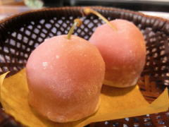
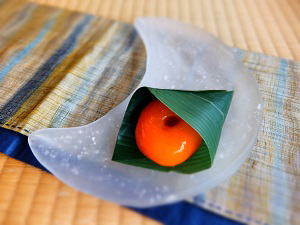
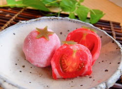
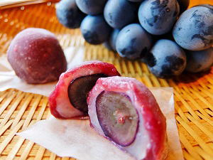

いちご大福
１月１０日頃～５月
八右エ門名物 ミルクあんのいちご大福。
甘酸っぱいとちおとめを、八右エ門特製ミルクあんで包んだ、柔らかお餅の大福です。
１度食べたらやみつきになること間違いなし！八右エ門の１番人気の看板商品です！

さくらんぼ大福
６月中旬（さくらんぼの時期）
2016年デビュー！
山形名物 佐藤錦を使った
かわいい大福
さくらんぼの季節だけの超限定販売です
|

あんず大福
６月～９月
冷やして食べる夏の大福。
丁寧に煮こんだ杏を練りこんだ杏のあんこと、プルプルつるんな不思議なお餅がのど越し最高のお菓子です。
暑い夏を涼しくしてくれるひと品。ぜひご賞味ください。

フルーツ
トマト大福
７月～８月頃
2016年デビューの八右エ門の自信作！
フルーツトマトを使った大福が登場！
トマト？とお思いのあなたも
この美味しさにきっと驚くはず！
ぜひ１度ご賞味くたさい。
|

ラフランス大福
１０月～１２月
ジューシーなラフランスの大福。
ラフランスと大福？と思われがちですが、ミルクあんの大福とラフランスの相性の良さに驚くはず！
暑さも終わり、肌寒くなってくると不思議と食べたくなる、見た目もきれいな冬の大福です。

ぶどう大福
９月頃
2018年デビュー！！
山形県産ナガノパープルをまるごと１粒使った贅沢な大福。
ぶどうはもちろん、お餅にも果汁を練りこんでいるので、食べた瞬間ぶどうの芳醇な香りが口いっぱいに広がります！
|